｡･:*:･ﾟ★,｡･:*:･ﾟ☆CAMPEONAS DE LOL QUE USO 💋｡･:*:･ﾟ★,｡･:*:･ﾟ☆
#1 SORAKA★
la hija de las estrellas
#2 SERAPHINE★
la cantante soñadora
#3 RELL★
la doncella de hierro
 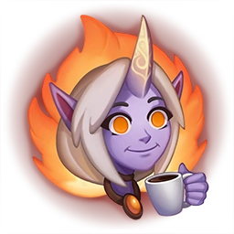
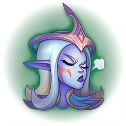
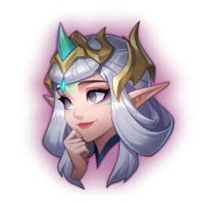
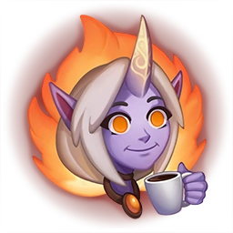
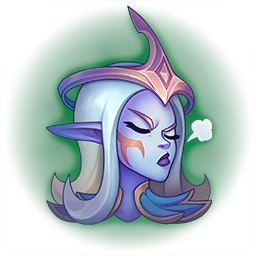
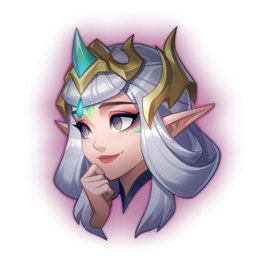
Soraka, hija de las estrellas de Jonia, fue la primera de su clase. Mientras que muchos intentaban acceder a las ricas energías mágicas de Valoran, ella fue la primera en acceder a la magia del cosmos. Buscó más allá del firmamento terrestre y logró invocar el poder de las estrellas y evolucionar más allá de su gente. Al menos, hasta que dejó que sus emociones más primarias la dominaran. Warwick, un químico mercenario al servicio de Noxus, había provocado un sufrimiento inenarrable a la gente de Soraka. De ella brotaron un odio y una furia imparables, y con una maldición condenó al hombre a convertirse en bestia. Debido a este desliz, Soraka perdió gran parte de su poder y en un instante descendió varios escalones en la escala evolutiva. Aunque sigue siendo una campeona de los jonios, se ha unido a la Liga de Leyendas con la esperanza de deshacer su maldición y redimirse a los ojos de las estrellas.
 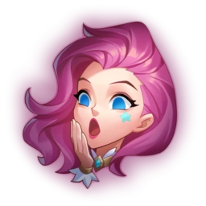
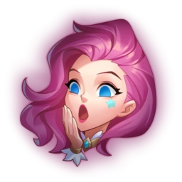
 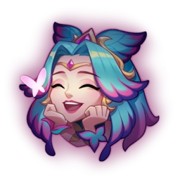
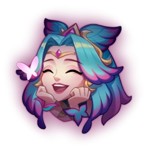
Nacida en Piltóver de padres zaunitas, Seraphine es capaz de escuchar las almas de otros; el mundo canta para ella, y ella canta para él. Aunque estos sonidos la abrumaban en su juventud, ahora acude a ellos para inspirarse y convertir el caos en una sinfonía. Se presenta en las ciudades hermanas para recordarles a sus ciudadanos que no están solos, que son más fuertes juntos y que, ante sus ojos, su potencial es ilimitado.
 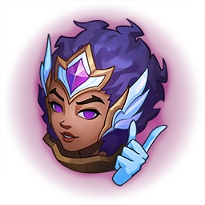
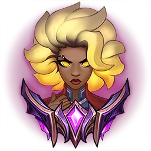
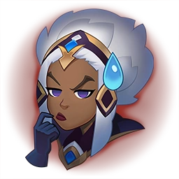
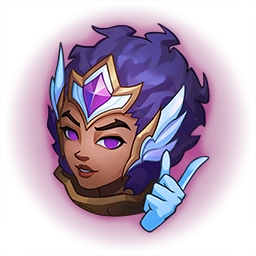
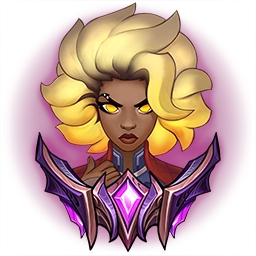
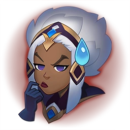
Producto de brutales experimentos realizados por la Black Rose Rosa Negra, Rell es un arma viviente rebelde con la firme determinación de acabar con Noxus. Su infancia estuvo llena de miseria y horror. Tuvo que soportar procedimientos atroces para perfeccionar y convertir en un arma mortal su control mágico del metal… hasta que huyó violentamente, matando a muchos de sus captores en el proceso. Considerada ahora una criminal, Rell ataca a cualquier soldado noxiano que se cruce en su camino, mientras busca sobrevivientes de su antigua academia, defiende a los débiles y da una muerte despiadada a sus antiguos instructores.